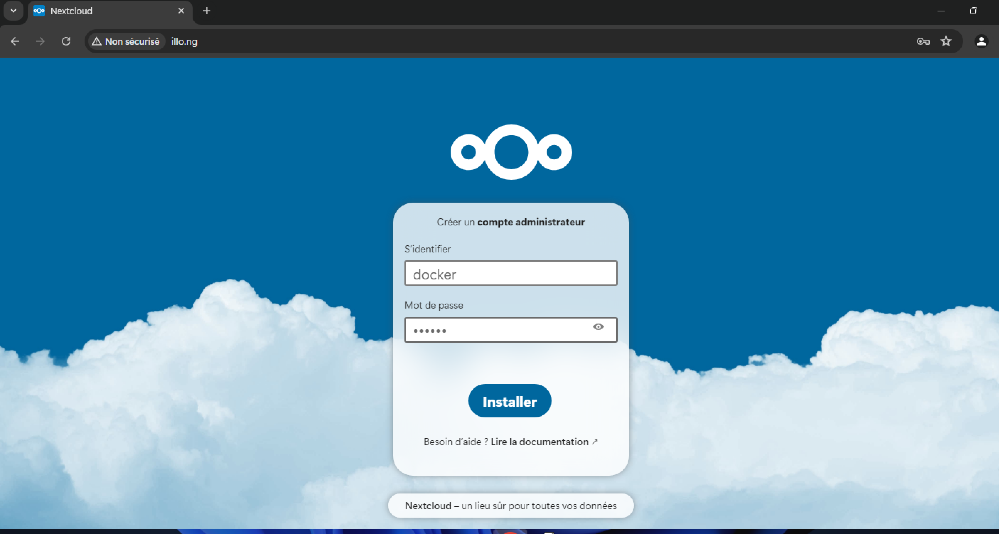
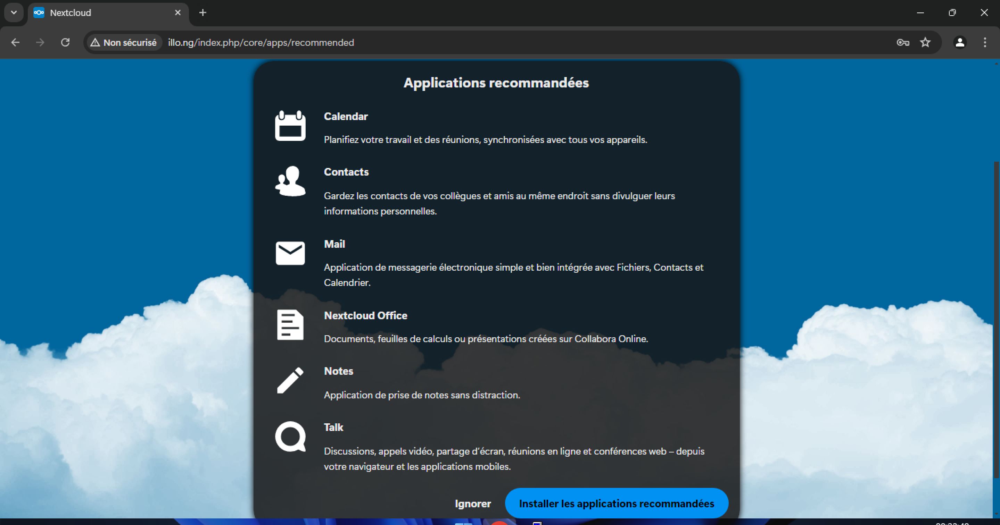
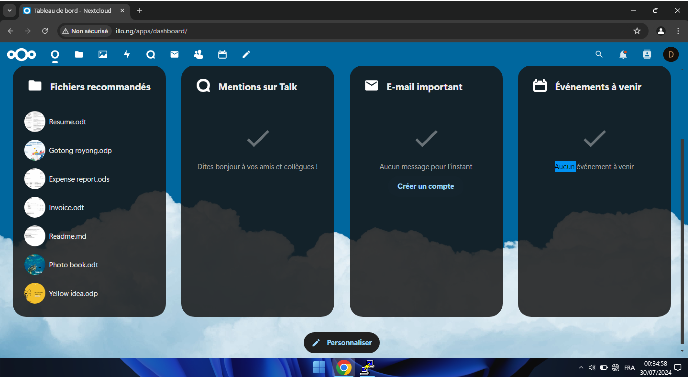
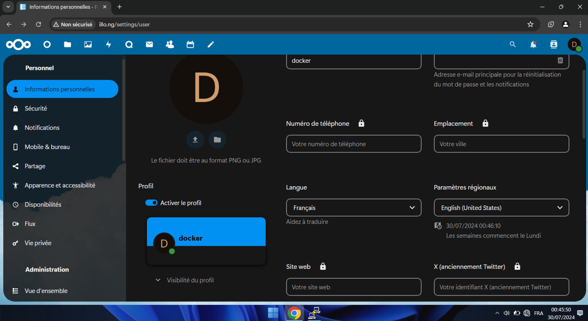

Nextcloud est une solution open source permettant de créer des espaces de stockage de fichiers, à la fois publics et privés. En d'autres termes, il vous offre la possibilité de mettre en place vos propres services de stockage en ligne, similaires à ceux proposés par Dropbox, Google Drive ou Mega.nz. Développé initialement par Frank Karlitschek, également créateur d'Owncloud, Nextcloud a été lancé en 2016 en tant que projet distinct. Depuis, il a beaucoup évolué et ne se limite plus à un simple espace de stockage. Aujourd'hui, Nextcloud est une plateforme polyvalente qui combine la synchronisation de fichiers avec de nombreuses fonctionnalités de collaboration. Grâce à une large gamme de plugins, il permet non seulement de gérer des projets et de tenir des visioconférences, mais aussi d'éditer des documents en groupe, de prendre des notes, de communiquer par messagerie, et bien plus encore. En somme, Nextcloud est devenu un outil complet pour la gestion de contenu et la collaboration en ligne. Ce tutoriel vous guidera à travers l'installation de Nextcloud sur un serveur Debian 12, en utilisant le serveur Web Apache2, le serveur de base de données MariaDB, et PHP 8.2. En outre, vous apprendrez à sécuriser votre installation avec le pare-feu UFW (Uncomplicated Firewall) et les certificats SSL/TLS de Letsencrypt.
Conditions préalables
Pour compléter ce guide, assurez-vous de disposer des éléments suivants : Un serveur Debian 12 avec au moins 2 Go de mémoire et 2 CPU. Un nom de domaine pointant vers l’adresse IP du serveur.
Installez docker et docker-compose
apt -y install docker.io docker-compose
Configuration de Docker Compose
Nous utiliserons Docker Compose pour déployer Nextcloud et MariaDB. Docker Compose permet de définir et de gérer des applications multi-conteneurs avec un simple fichier YAML.
nano docker-compose.yml
services:
nextcloud_db:
image: mariadb
container_name: nextcloud_db
hostname: nextcloud_db
restart: unless-stopped
command: --transaction-isolation=READ-COMMITTED --binlog-format=ROW
env_file: .env
networks:
- nextcloud
volumes:
- nextcloud-db:/var/lib/mysql
nextcloud_app:
depends_on:
- nextcloud_db
image: nextcloud
container_name: nextcloud_app
hostname: nextcloud_app
restart: unless-stopped
ports:
- 80:80
env_file: .env
networks:
- nextcloud
volumes:
- nextcloud-html:/var/www/html
- nextcloud-webconf:/etc/apache2
- /etc/timezone:/etc/timezone:ro
- /etc/localtime:/etc/localtime:ro
volumes:
nextcloud-db:
nextcloud-html:
nextcloud-webconf:
networks:
nextcloud:
Détail des prestations
Service nextcloud_db (MariaDB)
Ce service fait appel à la version officielle de MariaDB. Le mode d'isolation des transactions est spécifié par le paramètre --transaction-isolation=READ-COMMITTED et le format du journal binaire est spécifié par le paramètre --binlog-format=ROW. La base de données est sauvegardée dans un volume Docker appelé nextcloud-db afin d'assurer la pérennité des données.
Service de l'application Nextcloud
Ce service se sert de la représentation officielle de Nextcloud. Le service nextcloud_db est responsable de la base de données. Il est possible d'accéder directement au port 80 du conteneur Nextcloud en utilisant l'adresse IP du serveur. Les fichiers de l'application Nextcloud et la configuration d'Apache sont stockés dans les volumes nextcloud-html et nextcloud-webconf respectivement.
Variables d'environnement
Définition
Une variable d'environnement est un paramètre dynamique stocké dans l'environnement d'un processus, qui peut affecter la manière dont les processus s'exécutent. Ces variables peuvent renfermer des données comme les chemins d'accès aux fichiers, les paramètres de configuration ou les informations propres à l'utilisateur dans un système d'exploitation. On les utilise fréquemment afin de régler le fonctionnement des logiciels et des services sans avoir besoin de modifier le code source.
Rôle des variables d'environnement dans Docker
Les variables d'environnement jouent un rôle essentiel dans le cadre de Docker et plus spécifiquement du fichier docker-compose.yml pour diverses raisons : Les applications de configuration offrent la possibilité de transférer des informations de configuration vers les conteneurs Docker. Par exemple, les informations de connexion à une base de données, les chemins de fichier ou d'autres options de configuration disponibles. La sécurité est renforcée en enregistrant les mots de passe et autres données confidentielles dans des variables d'environnement plutôt que dans le code ou les fichiers de configuration. Cela simplifie également la préservation des secrets. Les variables d'environnement offrent la possibilité de rendre les configurations de conteneurs plus flexibles et portables. Par exemple, il est possible d'utiliser des fichiers.env distincts pour les environnements de développement, de test et de production, en prenant en compte les configurations propres à chaque secteur. Un exemple pratique dans le cadre de Nextcloud. Dans le cas présenté pour le déploiement de Nextcloud avec Docker, on utilise les variables d'environnement afin de configurer la base de données MariaDB et d'autres paramètres.
Création du Fichier
nano .env
MYSQL_DATABASE=nextcloud MYSQL_USER=amadousysamn MYSQL_PASSWORD=password MYSQL_ROOT_PASSWORD=passer MYSQL_HOST=nextcloud_db TZ=Senegal/Dakar
Déploiement
docker-compose up -d
Accès à l'interface web
Après avoir démarré les conteneurs, vous avez la possibilité d'accéder à l'interface web de Nextcloud en ouvrant un navigateur et en courant vers http://ip, où ip est l'adresse IP de votre serveur. Il vous sera demandé de finaliser la configuration initiale de Nextcloud, incluant la création d'un compte administrateur et la configuration de la base de données.
   